Pete Gadomski, Development Seed
Image Wilfredor, CC0, via Wikimedia Commons
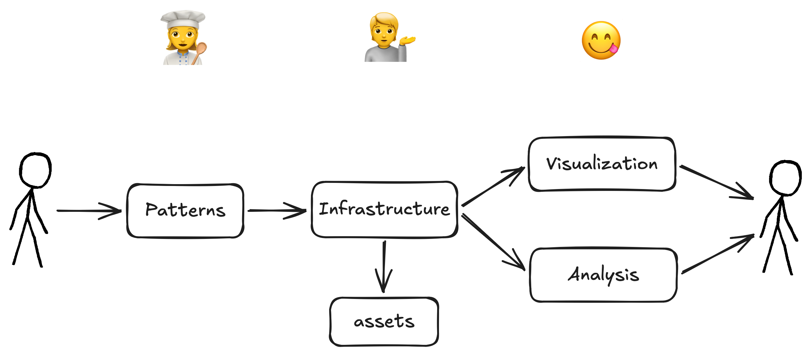
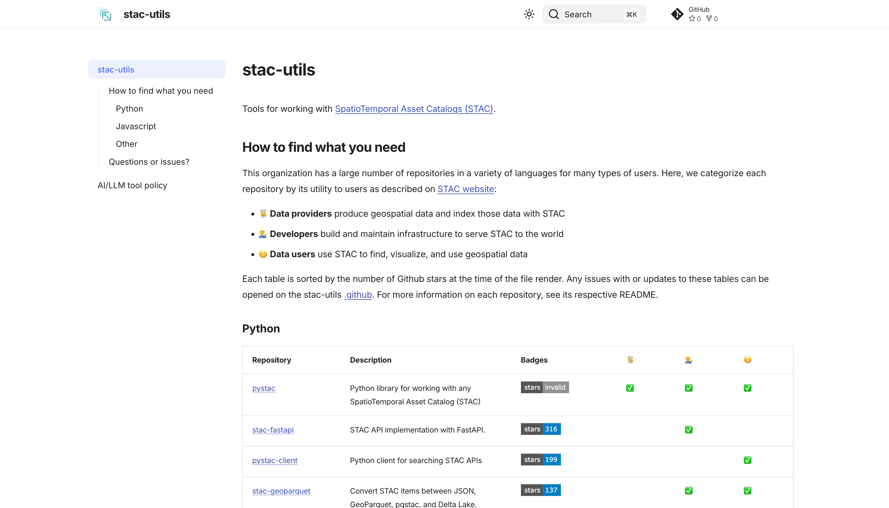
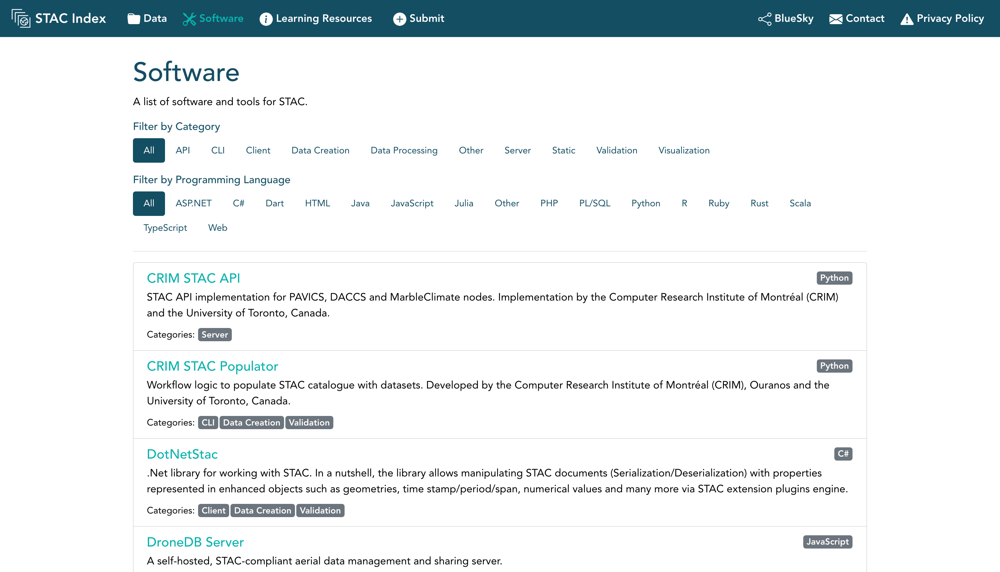
For 😋 Data users
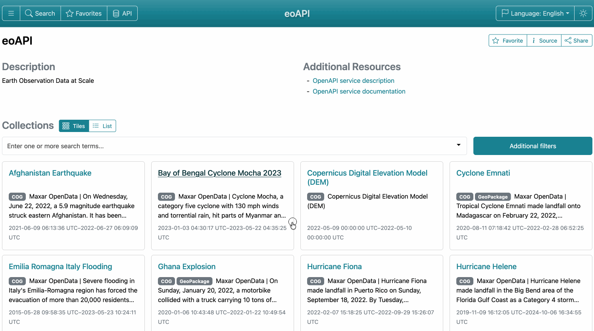
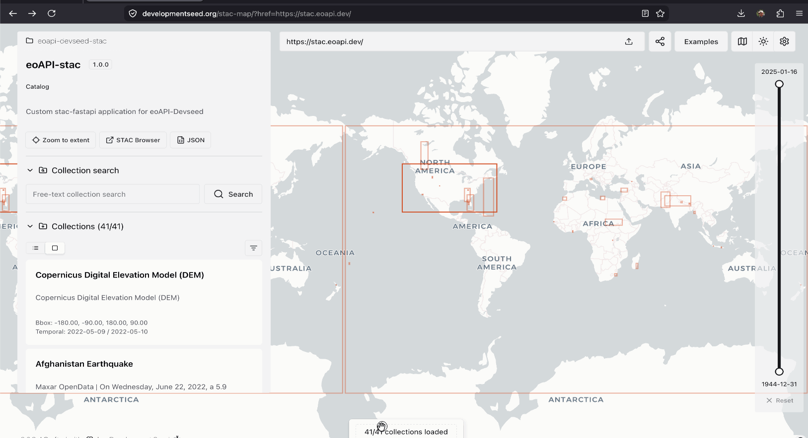
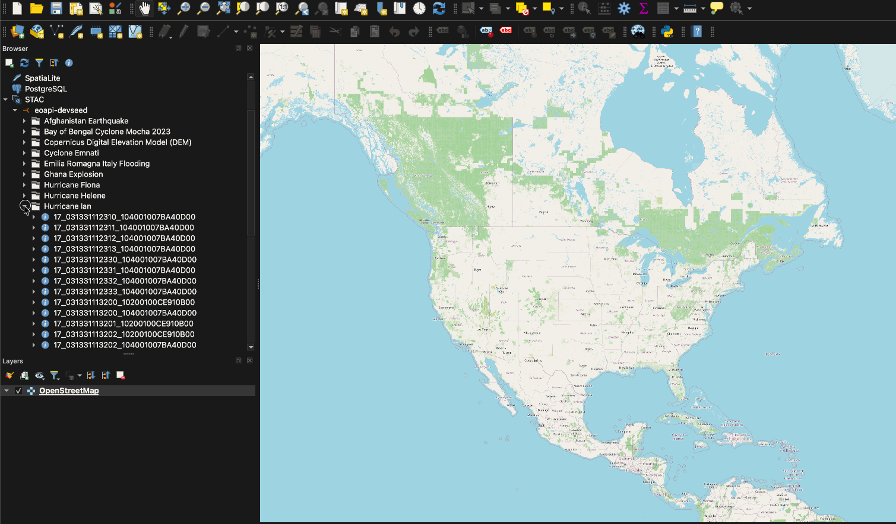
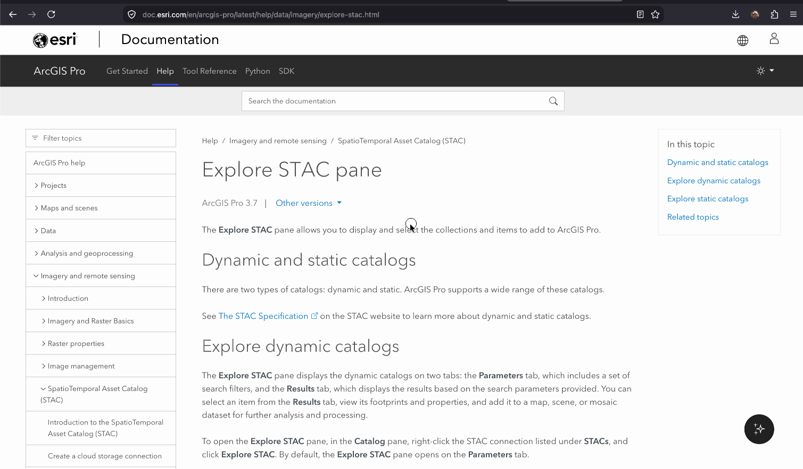
For 😋 Data users
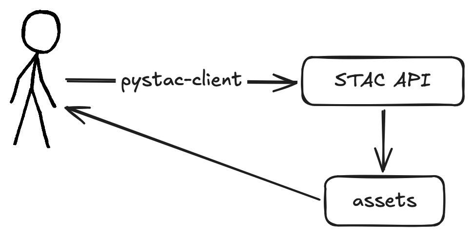
from pystac_client import Client
client = Client.open("https://stac.eoapi.dev")
search = client.search(collections=["MAXAR_yellowstone_flooding22"])
for item in search.items():
print(f"- {item.id}")
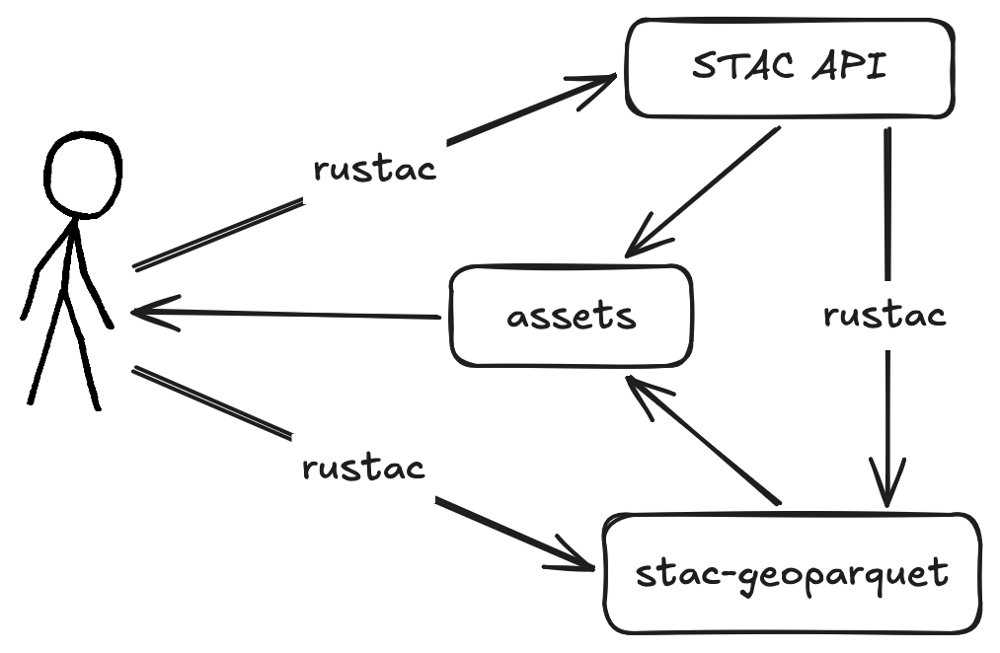
await rustac.search_to(
"items.parquet",
"https://stac.eoapi.dev",
collections=["MAXAR_yellowstone_flooding22"],
)
for item in await rustac.search("items.parquet"):
print(f"- {item['id']}")
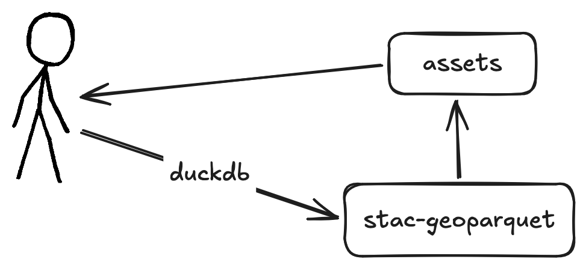
select id from 'items.parquet';
select id from 'https://stac.test/items.parquet';
select id from 's3://mybucket/items.parquet';
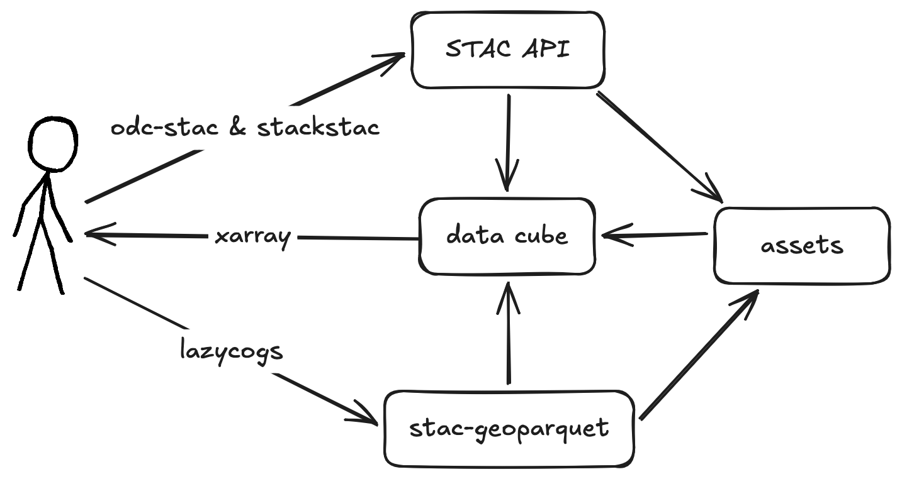
data_array: xarray.DataArray = lazycogs.open(
"items.parquet",
bbox=bbox,
crs=crs,
resolution=10.0,
bands=["red", "green", "blue", "nir"],
)
For 💁 Developers
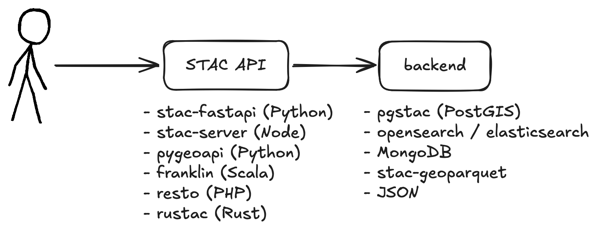
For 👩🍳 Data providers
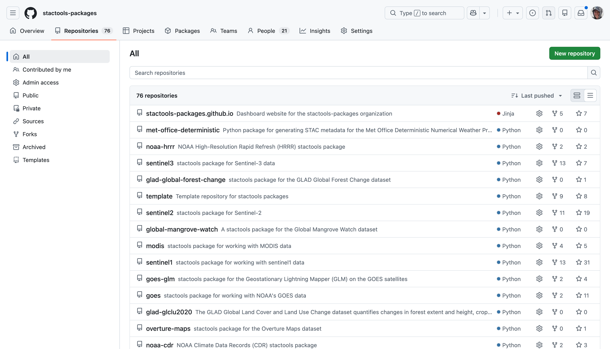
https://github.com/stactools-packages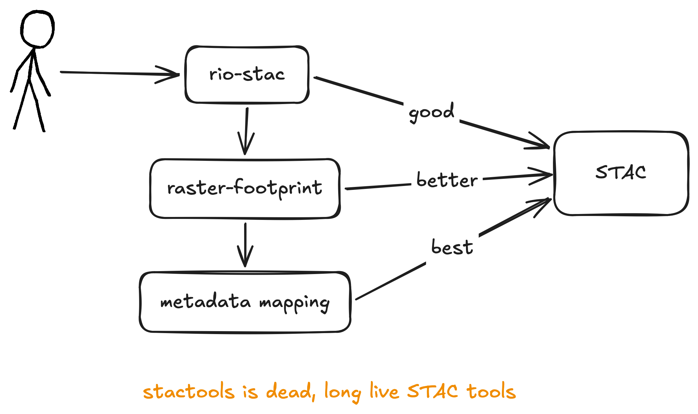
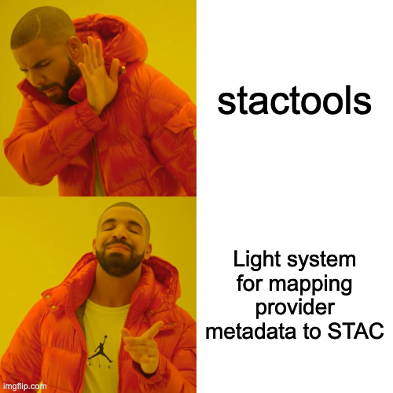
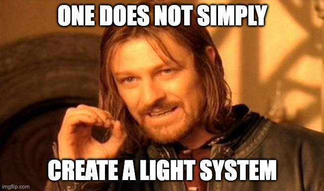
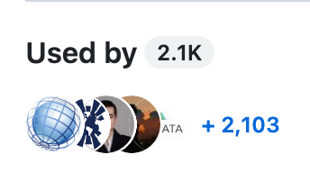
Read more about pystac v2
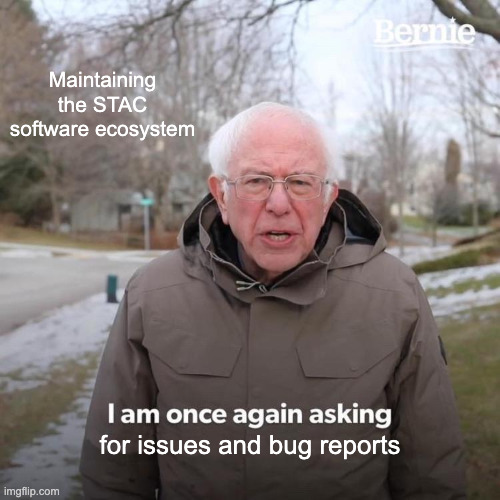
Thanks for your time!
slides | @gadomski on Github | gadom.ski on Bluesky
Image Wilfredor, CC0, via Wikimedia Commons
{kind=link}